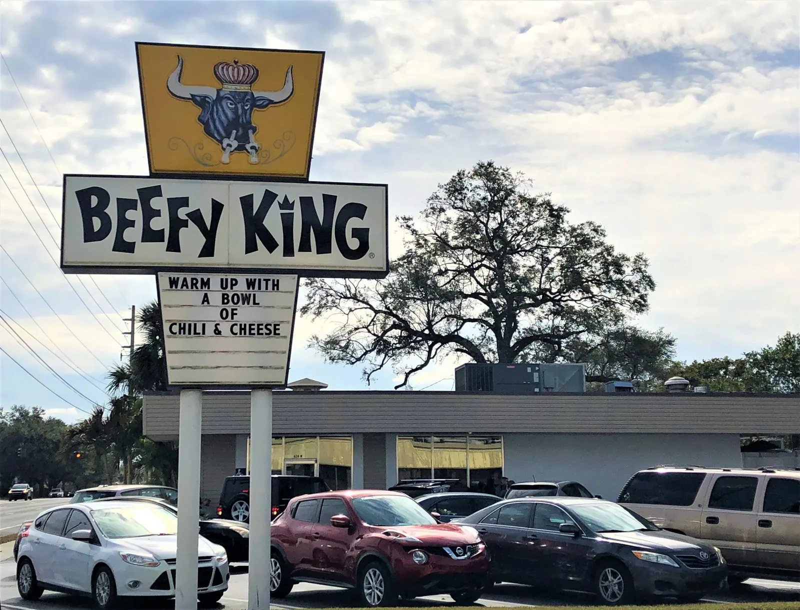

Beefy King
Every city has a sandwich shop its people would defend in a fistfight, and in Orlando that shop is Beefy King. Since 1968, Freeman and Margaret Smith's counter on Bumby Avenue has been steaming roast beef until it falls apart in a good way, piling it onto soft, steamed kaiser rolls with diced onions, and sending it out with Beefy Spuds, crisp tater tots by another name, and chili that tastes like decades of practice. It survived an arson fire and came back swinging. Go for lunch and understand why nobody here touches the drive-thru chain version.